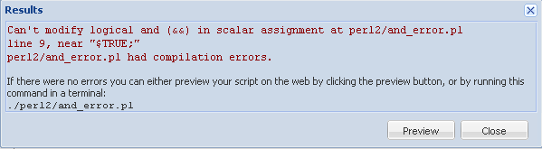

Welcome to lesson two! In this lesson, we'll look at how to open specific files by a much more efficient
mechanism than naming them on the command line or playing games with @ARGV. But first, we'll see
how there is yet another way to express a conditional statement (don't worry, this is directly related to
this lesson's topic, as you will soon see).
As we discussed in the last lesson, the postfixed conditional modifiers may look like they're
the wrong way around, but they really aren't; and sometimes we talk that way anyway ("Make me a sandwich,
if you have the time"), so postfixed modifiers can be a natural way of expressing yourself in Perl.
But if you still don't like the look of clauses in that order, you don't have to use postfixed
modifiers. Remember Perl's motto: "There's More Than One Way To Do
It" (TMTOWTDI). There is a third option. Remember the && operator, meaning
"and"?
&& example
if ( $count > 1 && $item eq "cereal" )
Let's investigate; create test_and.pl as shown:
CODE TO TYPE: test_and.pl
#!/usr/bin/perl
use strict;
use warnings;
my $count = 2;
if ( $count < 1 && item_test() )
{
print "Don't expect to see this\n";
}
else
{
print "Failed conditional\n";
}
sub item_test
{
print "Don't expect to see this either\n";
}
 and run it.
and run it.
INTERACTIVE TERMINAL SESSION
cold:~$ cd perl2
cold:~/perl2$ ./test_and.pl
Failed conditional
cold:~/perl2$
Perl didn't even call the item_test subroutine to find out its
value—it didn't need to know!
We call this short-circuiting; Perl does not evaluate the right side if it would make no
difference to the result of the expression. If $count is not less than 1, the result of
item_test() is irrelevant, so Perl saves time and doesn't bother; it just returns
false as the result of the whole expression straight away.
Short-circuiting causes && to behave just the same as an if
statement would; if the left side (condition) is true, then evaluate the right side (conditionally executed
block). Even though Perl computes a value for the && expression, we don't have to
use it. So we could write our postfixed example from the previous lesson as:
OBSERVE: && for control flow
$car_type eq 'hybrid' && print "Check remaining battery life\n";
How about that! But there is one change we should consider. There's
another form of the && operator that means exactly the same thing: and.
The change might seem insignificant at first, but there is a crucial
difference between the two options here. The && operator has a relatively
high precedence, which means that
Perl will evaluate the && operator before many other operators in an expression.
(Precedence is the reason that 4 + 5 * 3 evaluates to 19 rather than 27; the
* has a higher precedence than the + and hence 5 * 3 is computed
before 4 +.)
But the and operator has a very low precedence. In fact, nothing comes lower than
and. So we'll want to use and instead of && to
control flow (that is, as an alternative to an if statement), otherwise we
could get into trouble. Suppose we were writing an && version of this statement:
OBSERVE: if example
if ( length $title > 1 )
{
$print_title = $TRUE;
}
If we write that as:
OBSERVE: && example
length $title > 1 && $print_title = $TRUE;
...we get a compilation error. Try it now to see what the error is; create and_error.pl as shown:
CODE TO TYPE: and_error.pl
#!/usr/bin/perl
use strict;
use warnings;
my $TRUE = 1;
my $title = "Intermediate Perl";
my $print_title;
length $title > 1 && $print_title = $TRUE;
, saving it in your /perl2 folder as
and_error.pl:

The problem lies in the high
precedence of &&. (Of course, we could fix that problem by putting in parentheses,
but if you follow the rule you're about to learn, you won't have to.) Modify and_error.pl as
shown:
CODE TO EDIT: and_error.pl
#!/usr/bin/perl
use strict;
use warnings;
my $TRUE = 1;
my $title = "Intermediate Perl";
my $print_title;
length $title > 1 and $print_title = $TRUE;
again. Everything is fine now, because and
gets evaluated "late." Now you can write the original example like this:
OBSERVE: and instead of postfixed if
$car_type eq 'hybrid' and print "Check remaining battery life\n";
The rule of thumb is, use && and || in expressions (where a value is
being calculated); use and and or for changing control flow (that is, instead
of lengthier forms of if and unless).
To find out more about precedence, run perldoc perlop and look at the table in the section on
Operator Precedence and Associativity.
"You cannot open a book without learning something." -Confucius
Now we'll look at how to open a file. This is an important topic. Virtually every
program of any utility will require that you read information into it from some source and write
information from it to some destination. The function in Perl that lets us do both is
called open(). I recommend that you do not read the perldoc -f
documentation on open() yet, because it could confuse and overwhelm you.
open() can be used for opening things other than files, and for opening things
in multiple ways; the perldoc -f documentation covers all of them. Save that documentation
for another time.
The
appropriate documentation section to read for this lesson is perldoc perlopentut.
Filehandles
Think about what it takes to read from a file. Every time you ask for more input, Perl has to know
where it left off. Perl also has to remember other, more esoteric, information to do with things like
buffers and such. You don't want to bother with all of that; you just want to get input. The way Perl
remembers everything that it has to know, without bothering us with it, is to hide it all
behind something called a filehandle.
A filehandle looks like a scalar, but you can't do the usual scalar-ish kinds of things with it
(well, you can try, but the results won't be helpful); you can only use it in file reading operations.
The same is true for outputting to a file, so we use filehandles for that as well. We create a
filehandle with open(). There's another important reason
for using
open(); it gives us a convenient way to find out whether we're
going to be successful at our task. If we're going to read from a file, we ought to find
out first of all whether it exists. But suppose we checked for that, got the answer "yes," and then went
to read from the file, but in between those two operations, someone deleted the file? Hmm. Fortunately,
open() acts as a kind of contract with the computer; if it is successful,
you won't have to worry about someone deleting the file, because you got there first, and you'll be able
to read from the file until you're done. Some operating systems achieve this by telling anyone who tries
to delete a file that you've opened, that they're not allowed to delete it; some operating systems do it
by deleting the file in name, but letting you continue to read the data from it until you're done, and
only then releasing the space the file occupies. With me so far? Good!
Similarly, if you're going to be writing to a file, you'd
like to know in advance whether you have permission to do so, as that file could be located in a directory
you're not allowed to change.
So that's why we have filehandles. We'll make some in a minute. First, let's go over the basic form of
open():
OBSERVE: generic form of open()
boolean = open filehandle, mode, filename
This is called the three-argument version of open().
There are other forms of the open() function
that have two arguments or even one argument, but we won't be addressing them in depth in this course.
The three-argument version is best for many reasons, primarily improved security.
You'll still see programs using the two-argument form in particular, because that version
was widely used before the three-argument version became available in 2000.
We want to learn current techniques though, so we'll stick to the three-argument version of open().
open() is a function like print(), where we typically
leave the parentheses off of the arguments. Put the parentheses on if you like, but most people leave them
off, most of the time.
Alright then, let's start creating an example and I'll explain it in detail as we go. Create
make_datafile.pl in your /perl2 folder, as shown:
CODE TO TYPE: make_datafile.pl
#!/usr/bin/perl
use strict;
use warnings;
my $DATA_FILE = 'songs.data';
my $fh;
if ( open $fh, '>', $DATA_FILE )
{
print {$fh} qq{2'02" Sgt. Pepper's Lonely Hearts Club Band\n};
print {$fh} qq{2'44" With A Little Help From My Friends\n};
print {$fh} qq{3'29" Lucy In The Sky With Diamonds\n};
close $fh;
}
else
{
die "Couldn't open $DATA_FILE: $!\n";
}
| Note |
Those curly braces around $fh in the print statements are not typos! There's something unusual going on
there that we'll explain fully later on.
|
and run it. A text file named
songs.data appears in the folder (type the ls
command to list the files there). To see the contents of the file, type this in the Unix shell:
INTERACTIVE TERMINAL SESSION:
cold:~/perl2$ cat ./songs.data
2'02" Sgt. Pepper's Lonely Hearts Club Band
2'44" With A Little Help From My Friends
3'29" Lucy In The Sky With Diamonds
cold:~/perl2$
Let's take a closer look at this program:
OBSERVE: make_datafile.pl
#!/usr/bin/perl
use strict;
use warnings;
my $DATA_FILE = 'songs.data';
my $fh;
if ( open $fh, '>', $DATA_FILE )
{
print {$fh} qq{2'02" Sgt. Pepper's Lonely Hearts Club Band\n};
print {$fh} qq{2'44" With A Little Help From My Friends\n};
print {$fh} qq{3'29" Lucy In The Sky With Diamonds\n};
close $fh;
}
else
{
die "Couldn't open $DATA_FILE: $!\n";
}
The qq operator is another way of writing double quotation marks
("qq" is supposed to remind you of that). The character immediately following
qq is the delimiter for the string. If it's a left character of a
mirrored pair (like (), or <>, {}), the closing delimiter for the string
will be the right character. I used it in this example so I wouldn't have to escape the "
character inside each string.
A filehandle is a scalar, but it's different from scalars we've encountered before.
It's not a number or a string. You can't do anything with it except use it to read from files
opened for reading or write to files opened for writing. Trying to increment one is pointless. The
open() call will assign to the filehandle even though it's one of the
arguments to open() (that's okay though; you can write subroutines that overwrite
their arguments, although it's not usually good style). In our example, we've created the filehandle
$fh.
A filehandle should be a lexical variable (one you declared with my) that is
undefined. You can make sure of that and save a line of code at the same time by declaring the
filehandle inside the open() call! This looks weird at first, but
you can put my before the first appearance of a variable just about anywhere,
not just on a line by itself. Let's try that. Modify make_datafile.pl as shown:
CODE TO EDIT: make_datafile.pl
#!/usr/bin/perl
use strict;
use warnings;
my $DATA_FILE = 'songs.data';
my $fh;
if ( open my $fh, '>', $DATA_FILE )
{
print {$fh} qq{2'02" Sgt. Pepper's Lonely Hearts Club Band\n};
print {$fh} qq{2'44" With A Little Help From My Friends\n};
print {$fh} qq{3'29" Lucy In The Sky With Diamonds\n};
print {$fh} << 'EOF';
2'02" Sgt. Pepper's Lonely Hearts Club Band
2'44" With A Little Help From My Friends
3'29" Lucy In The Sky With Diamonds
2'48" Getting Better
EOF
close $fh;
}
else
{
die "Couldn't open $DATA_FILE: $!\n";
}
and run it, and cat ./songs.data again.
The previous data file was overwritten (with the same contents, plus the track we added).
Here's what we did:
OBSERVE: make_datafile.pl
#!/usr/bin/perl
use strict;
use warnings;
my $DATA_FILE = 'songs.data';
if ( open my $fh, '>', $DATA_FILE )
{
print {$fh} << 'EOF';
2'02" Sgt. Pepper's Lonely Hearts Club Band
2'44" With A Little Help From My Friends
3'29" Lucy In The Sky With Diamonds
2'48" Getting Better
EOF
close $fh;
}
else
{
die "Couldn't open $DATA_FILE: $!\n";
}
We collapsed all the print statements into a single one, using a heredoc
(<<).
The result of the open() call is true if the file
can be opened successfully. In this case, the file songs.data is opened for output (that's what the second
parameter, the string '>' means; we'll see how to do input shortly). The third
parameter ($DATA_FILE) refers to the file name.
I said I'd explain the curly braces around {$fh} in the print statements.
The way we output to a filehandle (and it must be one that is open for writing, not reading, or we'll
get an error message) is with the print statement. But because print sends everything to the standard
output by default (technically, it sends it to the currently selected filehandle, which by default is the
standard output), there must be a way to tell print to use a different filehandle. We do that with a
special "argument," which is the filehandle inside curly braces ({$fh}). It's not an
argument in the usual sense, because there's no comma after it; if you add a comma by mistake, Perl
will just turn the filehandle into a (funny-looking) string and print it to the standard output. The
braces are optional, by the way, but it's a best practice for readability to use them, so we always
will.
The $! variable is a special variable in Perl, like @ARGV. If an
open() call fails (returns false), $! is set to the text of the reason
for the failure.
We'll almost always want to call die when an open() call fails;
few programs can keep going constructively after being unable to open a file. You saw in the last
lesson how to collapse a whole elsif clause using the and form of conditional when the
statement in the block caused a change of control flow. We can do the same in this
program. Modify make_datafile.pl as shown:
CODE TO EDIT: make_datafile.pl
#!/usr/bin/perl
use strict;
use warnings;
my $DATA_FILE = 'songs.data';
if ( open my $fh, '>', $DATA_FILE )
{
open my $fh, '>', $DATA_FILE or die "Couldn't open $DATA_FILE: $!\n";
print {$fh} <<'EOF';
2'02" Sgt. Pepper's Lonely Hearts Club Band
2'44" With A Little Help From My Friends
3'29" Lucy In The Sky With Diamonds
2'48" Getting Better
2'37" Fixing A Hole
EOF
close $fh;
}
else
{
die "Couldn't open $DATA_FILE: $!\n";
}
and run it, and look at songs.data—again, the
output is the same except for the new track.
We can do one more thing to make this program more concise. The close() function
is the converse of open() (read the perldoc -f
documentation on it if you like). As its name suggests, close()
causes the file to close; you can no longer use the
filehandle without getting an error message. In particular, all pending output to files opened for writing
is flushed. (If you look at an output file as it's being written by another program running at the same
time, you probably won't see the output show up until some time after the program has printed it. It's
buffered by Perl or the operating system and written in chunks to improve efficiency.)
If the lexical variable holding the filehandle is destroyed, Perl calls close()
right then and we don't need to call it explicitly. (After all, if the filehandle is no longer available
to your program, you can't do anything more with it.) We can cause a lexical variable to be destroyed by
limiting its scope. This is a good use for a naked block. Modify make_datafile.pl as
shown:
CODE TO EDIT: make_datafile.pl
#!/usr/bin/perl
use strict;
use warnings;
my $DATA_FILE = 'songs.data';
{
open my $fh, '>', $DATA_FILE or die "Couldn't open $DATA_FILE: $!\n";
print {$fh} <<'EOF';
2'02" Sgt. Pepper's Lonely Hearts Club Band
2'44" With A Little Help From My Friends
3'29" Lucy In The Sky With Diamonds
2'48" Getting Better
2'37 Fixing A Hole
3'35" She's Leaving Home
EOF
}
close $fh; and run it, and cat ./songs.data. Once
again, the output is the same except for the new track. In this example, that makes no difference
technically, because the program ends at that point and all open filehandles are closed upon program exit
anyway. But it's still a good practice to limit the scope of a filehandle the same way you'd limit the scope of
any other variable.
Every time you open a file, you should check to see whether the open() succeeded.
Every Perl programmer does this using open ... or die .... So as you can see, the third
alternative form of conditional syntax (... and/or ...) is part of what is likely the most common idiom in Perl.
Let's see what happens if the open() fails. At the Unix shell prompt, type the
command shown:
INTERACTIVE TERMINAL SESSION:
cold:~/perl2$ chmod -w ./songs.data
Now and run it and see what happens.
To change the rights back, type:
INTERACTIVE TERMINAL SESSION:
cold:~/perl2$ chmod +w ./songs.data
In the Perl 1 course, we discovered the <> operator, which reads from files named in
@ARGV. But guess what? That's actually a special case of something more general that we'll learn about now.
We'll write another program that will read the songs.data
file and total the song lengths. Let's call this one read_datafile.pl. Type the code below as shown:
CODE TO TYPE: read_datafile.pl
#!/usr/bin/perl
use strict;
use warnings;
my $DATA_FILE = 'songs.data';
open my $fh, '<', $DATA_FILE or die "Couldn't open $DATA_FILE: $!\n";
while ( my $line = <$fh> )
{
chomp $line;
my $minute_pos = index $line, "'";
my $second_pos = index $line, '"';
my $minutes = substr $line, 0, $minute_pos;
my $seconds = substr $line, $minute_pos + 1, $second_pos - $minute_pos - 1;
my $running_time = $minutes + $seconds / 60;
my $title = substr $line, $second_pos + 2;
print "$title lasts $running_time minutes\n";
}
and run it. Now let's take a closer look:
OBSERVE: read_datafile.pl
#!/usr/bin/perl
use strict;
use warnings;
my $DATA_FILE = 'songs.data';
open my $fh, '<', $DATA_FILE or die "Couldn't open $DATA_FILE: $!\n";
while ( my $line = <$fh> )
{
chomp $line;
my $minute_pos = index $line, "'";
my $second_pos = index $line, '"';
my $minutes = substr $line, 0, $minute_pos;
my $seconds = substr $line, $minute_pos + 1, $second_pos - $minute_pos - 1;
my $running_time = $minutes + $seconds / 60;
my $title = substr $line, $second_pos + 2;
print "$title lasts $running_time minutes\n";
}
The <> operator (which we call the readline operator) in this program
is taking an argument, namely, $fh. It works just like the empty form of
<>, only without the magical behavior of opening successive files named on the command
line. It returns the next line from the filehandle $fh in a scalar context, and all of
the remaining lines in a list context.
If you took the Perl 1 course and you've been paying exceptionally close attention, you may wonder why
the while line does not wrap the condition in a defined test.
Isn't this asking for trouble, if the file contains a line with a string value that would be false? Granted,
there is only one such possible value—a line containing precisely the character 0 (zero) and not
even a newline on the end, which means it would have to be the last line in the file, but still, we don't
want to miss any possible lines.
In fact, Perl looks at the condition of a while statement, and if it consists of
an assignment from the readline operator, then it wraps the condition in a call to
defined for you. Pretty helpful, huh? In a few lessons it will get even
better!
Also, in this program we had to find the
position of the single and double quote marks that mark the end of the minutes and seconds respectively
in each line, and figure out how far away from those positions to extract the substrings we needed. (This
is necessary because the input data is not in fixed-width columns.) That's clumsy, but there's a better
way of doing it that we'll be learning about in this course.
Check out a common error condition now, so you know what it looks like. Delete the file
songs.data (don't worry, you can get it back any time by rerunning
make_datafile.pl) and then rerun read_datafile.pl. Make sure you get
get an error and that you understand it.
You've seen that to open a filehandle to read from, you specify a mode of '<'; and
that to open a filehandle to write to, you specify a mode of '>'. There are many
other possible modes, and they are detailed in the perldoc -f open documentation, but be
forewarned—most of them are hard to understand and harder still to use correctly. One of the more accessible modes
is append, which is denoted by '>>'. If the file does not already
exist, it will be created; if it already exists, the output will be added to the end of its current
contents.
Let's give that a test by modifying make_datafile.pl as shown:
CODE TO EDIT: make_datafile.pl
#!/usr/bin/perl
use strict;
use warnings;
my $DATA_FILE = 'songs.data';
{
open my $fh, '>>', $DATA_FILE or die "Couldn't open $DATA_FILE: $!\n";
print {$fh} <<'EOF';
2'02" Sgt. Pepper's Lonely Hearts Club Band
2'44" With A Little Help From My Friends
3'29" Lucy In The Sky With Diamonds
2'48" Getting Better
2'37" Fixing A Hole
3'35" She's Leaving Home
EOF
} and run it a few times, and see what happens in
songs.data.
Excellent. Congratulations on getting through this new and important topic! We'll build on what we've learned
here as we go through this course. See you in a bit...
Once you finish the lesson, go back to the syllabus page by clicking on the page tab above and do
the assignments.